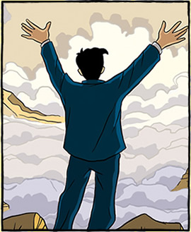

|
Μια ιστορία μέσα σε μια άλλη. Ένα μυθιστόρημα με μορφή κόμικ. Ένα δοκίμιο που χωρά
(Bertrand Russell, Autobiography) Ο πόλεμος του 1914-1918 άλλαξε τα πάντα για μένα. Έπαψα να είμαι ακαδημαϊκός και ξεκίνησα να γράφω ένα νέο είδος βιβλίων. Άλλαξα όλη μου την αντίληψη για την ανθρώπινη φύση. Πείστηκα για πρώτη φορά ότι ο Πουριτανισμός δεν συντελεί στην ευτυχία. Μέσω του θεάματος του θανάτου απέκτησα νέα αγάπη για κάθε τι ζωντανό. Είμαι πια πεπεισμένος ότι οι περισσότεροι άνθρωποι διακατέχονται από μια βαθιά δυστυχία που εκφράζεται με καταστροφική οργή και ότι μόνο μέσω της διάχυσης της εσωτερικής χαράς ένας καλός κόσμος μπορεί να είναι εφικτός. Διαπίστωσα ότι στο σημερινό μας κόσμο, τόσο οι μεταρρυθμιστές όσο και οι αντιδραστικοί έχουν μεταμορφωθεί από τις αγριότητες. Έγινα καχύποπτος προς κάθε σκοπό που απαιτεί αυστηρή πειθαρχία. Όντας αντίθετος στο συνολικό σκοπό της κοινότητας και βλέποντας όλες τις καθημερινές αξίες να χρησιμοποιούνται ως μέσα για τον σφαγιασμό των Γερμανών, το βρήκα ιδιαίτερα δύσκολο να μην γίνω Αντινομιστής. Με έσωσε όμως από αυτό η βαθύτατη συμπόνια που ένιωσα για τα δεινά του κόσμου.
(Σημειωματάριο του Logicomix) Μία συστηματική διαδικασία, καθορισμένη βήμα προς βήμα από απολύτως σαφείς κανόνες, που ξεκινά από μια ορισμένη κατάσταση και καταλήγει στο επιθυμητό αποτέλεσμα. Αν και ο όρος προέρχεται από τα μαθηματικά, όπου κυρίως χρησιμοποιείται, αλγόριθμος κάλλιστα μπορεί να είναι μια μαγειρική συνταγή, ή οι οδηγίες για να βρούμε κάποια διεύθυνση. Απλός μαθηματικός αλγόριθμος είναι, για παράδειγμα, η μέθοδος που μαθαίνουμε στο δημοτικό για την πρόσθεση δύο ακεραίων: «Γράψτε τους αριθμούς τον ένα κάτω από τον άλλον, ευθυγραμμισμένους δεξιά. Στην αρχή προσθέστε την άκρη δεξιά στήλη, και αν το αποτέλεσμα είναι μονοψήφιο, γράψτε το από κάτω, στην ίδια στήλη. Αν είναι διψήφιο, γράψτε από κάτω το δεξιά ψηφίο του αποτελέσματος, κρατήστε το πρώτο ψηφίο και προσθέστε το στη δεύτερη στήλη από τα δεξιά...», κ.ο.κ. Σήμερα, οι αλγόριθμοι κατά κανόνα κωδικοποιούνται με σύνθετα συμβολικά συστήματα που αποκαλούνται «γλώσσες προγραμματισμού», και είναι στη βάση της λειτουργίας των ηλεκτρονικών υπολογιστών και του Ίντερνετ.
(Σημειωματάριο του Logicomix) Από τον καιρό του Ευκλείδη, που είχε δεχθεί και τις σχετικές επιδράσεις του έργου του Αριστοτέλη στη Λογική, οι μαθηματικοί θεωρούν ότι μια σωστά δομημένη θεωρία πρέπει να βασίζεται σε κάποιες (κατά κανόνα λίγες) απλές βασικές αρχές, που δεν απαιτούν απόδειξη. Αυτό αποτελεί λογική αναγκαιότητα, αν θέλει κανείς να αποφύγει την άπειρη αναδρομή (να προσπαθεί ασταμάτητα να βασίσει το καθετί σε κάτι άλλο), ή την κυκλικότητα (να αναγκάζεται να βασίζει την ισχύ μιας πρότασης, έτσω εμμέσως, στον εαυτό της). Μέχρι τον 19ο αιώνα, τα αξιώματα θεωρούνταν αυτονόητες αλήθειες για τον κόσμο, έννοιες τόσο προφανείς που δεν χρειάζονται απόδειξη. Την άποψη αυτή πρεσβεύει ουσιαστικά και ο Φρέγκε, στο έργο του οποίου τα αξιώματα εκφράζουν κάποιες θεμελιώδεις, υπέρτατες λογικές αλήθειες. Όμως, από τον Χίλμπερτ και μετά, και κάτω από την επίδραση της σχολής του φορμαλισμού, τα αξιώματα ερμηνεύονται ανεξάρτητα από οποιαδήποτε αναφορά στην εξωτερική πραγματικότητα, με μόνες απαιτήσεις: από τα μεν μεμονωμένα αξιώματα τη γραμματική ορθότητα (δηλαδή να είναι γραμμένα σωστά, σύμφωνα με τους κανόνες της λογικής γλώσσας που χρησιμοποιούν), και από το σύνολο των αξιωμάτων ενός συστήματος τη μεταξύ τους συνέπεια (να μην υπάρχουν αξιώματα που αντιφάσκουν με άλλα), και την ανεξαρτησία τους (να μη συνάγονται από άλλα αξιώματα της ίδιας θεωρίας).
(Bertrand Russell, Autobiography) Στο τέλος της Σαρακοστής, η Άλις κι εγώ επιστρέψαμε στο Φέρνχερστ, όπου ξεκίνησα να γράφω τη λογική καταστροφή των μαθηματικών, η οποία αργότερα ονομάστηκε Principia Mathematica. Νόμιζα ότι η δουλειά είχε σχεδόν ολοκληρωθεί, αλλά το Μάιο βίωσα ένα πνευματικό εμπόδιο σχεδόν εξίσου δριμύ με το συναισθηματικό εμπόδιο που είχα βιώσει τον Φεβρουάριο, την «επιθανάτια εμπειρία» της Έβελιν Ουάιτχεντ. Ο Κάντορ είχε μια απόδειξη ότι δεν υπάρχει μέγιστος αριθμός, και μου φάνηκε ότι ο αριθμός όλων των πραγμάτων στον κόσμο θά ‘πρεπε να είναι ο μέγιστος δυνατός. Κατά συνέπεια, έλεγξα εξονυχιστικά την απόδειξή του, και προσπάθησα να την εφαρμόσω στο σύνολο όλων των πραγμάτων που υπάρχουν. Αυτό με οδήγησε να μελετήσω τα σύνολα που δεν είναι μέρη του εαυτού τους και να αναρωτηθώ, εάν το σύνολο τέτοιων συνόλων είναι ή δεν είναι μέρος του εαυτού του. Ανακάλυψα ότι και οι δυο απαντήσεις υποδηλώνουν την παραδοξότητά τους. Στην αρχή υπέθεσα ότι θα ήμουν ικανός να ξεπεράσω το παράδοξο αυτό αρκετά εύκολα και ότι μάλλον υπήρχε κάποιο ασήμαντο σφάλμα στη συλλογιστική μου. Βαθμιαία, ωστόσο, έγινε ξεκάθαρο ότι δε συνέβαινε κάτι τέτοιο.
(Σημειωματάριο του Logicomix) Η διαδικασία της λογικής επιβεβαίωσης μιας μαθηματικής πρότασης που ξεκινά από ένα σύνολο αποδεκτών αρχών (αξιωμάτων ή ήδη αποδεδειγμένων προτάσεων) και προχωρεί μέσω σαφώς ορισμένων και ολοκληρωμένων λογικών βημάτων, που λέγονται και συμπερασματικοί κανόνες. Οι αποδείξεις των γεωμετρικών προτάσεων των Στοιχείων του Ευκλείδη αποτελούσαν για είκοσι τρεις περίπου αιώνες το πρότυπο μαθηματικής απόδειξης. Όμως, προς τα τέλη του 19ου αιώνα, η παλιά αποδεικτική μέθοδος έγινε αντικείμενο διεξοδικότατης φιλοσοφικής και λογικής διερεύνησης και βρέθηκε να είναι ελλιπής, κυρίως σε δύο κατευθύνσεις: α) την έννοια των αξιωμάτων ως «αυτονόητων αληθειών» και, β) των λογικών αλμάτων, όπου η διαίσθηση -που ειδικά στον Ευκλείδη είναι κυρίως οπτική-γεωμετρική- συμπλήρωνε κάποια κενά που άφηναν οι συμπερασματικοί κανόνες. Με την έννοια αυτή, η θεμελίωση των μαθηματικών στη λογική, ξεκινά σε μεγάλο βαθμό ως αντίδραση στις ατέλειες της αποδεικτικής μεθόδου του Ευκλείδη, αλλά και των επιγόνων του, δυτικών μαθηματικών, που τον είχαν ως πρότυπο. Γενικότερα, η αναζήτηση των θεμελίων των μαθηματικών περιλάμβανε στους κεντρικούς στόχους της μία πλήρη θεωρία και πρακτική της αυστηρά λογικής απόδειξης, σύμφωνα με την οποία τα μαθηματικά θα μπορούν να παράγουν όλες τις αλήθειες τους από ένα μικρό, συνεπές σύνολο αξιωμάτων. Το μεγάλο ερώτημα του Χίλμπερτ, το λεγόμενο Πρόβλημα της Απόφασης που τέθηκε το 1928 και απαντήθηκε επτά χρόνια αργότερα από τον Τούρινγκ, ουσιαστικά ισοδυναμεί με το αίτημα ενός ενιαίου, πανίσχυρου μηχανισμού αποδείξεων, ικανού να χαρακτηρίσει αληθή ή ψευδή την οποιαδήποτε μαθηματική πρόταση με βάση έναν αυστηρά καθορισμένο αλγόριθμο. (Σημειωματάριο του Logicomix) Στην κυριολεξία, η ιδιότητα μιας πρότασης να αναφέρεται στον εαυτό της. Η χρήση του όρου γενικεύεται στη λογική για να αναφερθεί σε προτάσεις που περιλαμβάνουν τον εαυτό τους στην έκταση της αναφοράς τους. ‘Eτσι, ο κουρέας του παραδείγματος για το Παράδοξο του Ράσελ εμπλέκεται κι αυτός στο δίλημμα, αφού η πρόταση «Όποιος δεν ξυρίζεται μόνος του, τον ξυρίζει ο κουρέας » αναφέρεται και στον ίδιο-αυτό γιατί η πρόταση αναφέρεται στους κατοίκους του χωριού και ο κουρέας είναι ένας απ'αυτούς. Οι αυτο-αναφορικές προτάσεις έχουν διαδραματίσει κυρίαρχο λόγο στη λογική, ήδη από την εποχή των αρχαίων Ελλήνων και των παραδόξων τους, όπως του Ευβουλίδη ή του Επιμενίδη («οι Κρητικοί λένε πάντα ψέματα»). Η απόδειξη του Κάντορ, για μη αριθμησιμότητα του συνόλου των πραγματικών αριθμών χρησιμοποιεί μια αριθμητική παραλλαγή της αυτο-αναφοράς, το θεώρημα της μη πληρότητας αποδείχθηκε από τον Γκέντελ με την κατασκευή μιας πρότασης που είναι πολύ κοντά στο πνεύμα του Ευβουλίδη, με μια κρίσιμη διαφορά: ενώ ο Ευβουλίδης δηλώνει, σε παράφραση, «ετούτη η πρόταση είναι ψευδής», η ιδιοφυής παραλλαγή του Γκέντελ λέει, στη γλώσσα της αριθμητικής, «ετούτη η πρόταση είναι μη αποδείξιμη». Κάθε συνεπής αξιωματική θεωρία μέσα στην οποία μπορεί κανείς να δημιουργήσει μια τέτοια πρόταση είναι από τη φύση της ή ασυνεπής ή μη πλήρης, αφού η πρόταση αυτή είναι είτε ψευδής, οπότε είναι και ψευδής και αποδείξιμη -αφού είναι ψευδές ότι είναι μη αποδείξιμη-καταρρίπτοντας τη συνέπεια του αξιωματικού συστήματος, είτε αληθινή, οπότε είναι και αληθής και μη αποδείξιμη, αποδεικνύοντας τη μη πληρότητα του συστήματος. Από τον Μπέρτραντ Ράσελ στη πρώην φιλενάδα του, Κολέτ Ονίλ 1η Μαΐου 1939 Αγαπητή Κολέτ, Σε ευχαριστώ για το γράμμα της 3ης Απριλίου το οποίο έλαβα ενόσω βρισκόμουν σε περιοδεία δίνοντας διαλέξεις, την οποία μόλις ολοκλήρωσα. Στις ερωτήσεις σου τώρα. Πόλεμος. Το όλο θέμα με απασχολεί μέρα και νύχτα. Είναι στιγμές που σκέφτομαι ότι πρέπει να πολεμήσουμε τον Χίτλερ, αλλά κατά βάθος εξακολουθώ να πιστεύω ότι ένας πόλεμος θα είναι χειρότερος από τον Χίτλερ. Την ίδια στιγμή βέβαια, νιώθω, όπως κι εσύ, ότι δεν μπορούμε να αρνηθούμε να βοηθήσουμε τους πολίτες. Ο τελευταίος πόλεμος κρίθηκε από ανθρώπινο δυναμικό, και κάποιος, ως φιλειρηνιστής, δεν μπορούσε να κάνει τίποτα που θα επέτρεπε να σταλεί στα χαρακώματα ένας πολίτης. Αυτός ο πόλεμος όμως δεν θα κριθεί από ανθρώπινο δυναμικό και το σπίτι θα είναι εξίσου επικίνδυνο με τα χαρακώματα. Έγραψα στον Τζον (ο οποίος είναι 17 ½) συμβουλεύοντάς τον, αν τον επιστρατεύσουν, να αποδεχτεί κάποιο είδος εναλλακτικής θητείας ώστε να σώζει ζωές-ARP (Πρόληψη Αεροπορικών Επιδρομών), σε ασθενοφόρο, σε νοσοκομείο, κ.ά.-αλλά όχι παρασκευή πυρομαχικών ή κάτι παρεμφερές. Το ίδιο ισχύει νομίζω και για σένα, αν και, μέχρι να φτάσει ο πόλεμος, μάλλον θα έχεις καλύτερα πράγματα να κάνεις με τον χρόνο σου από το να ασχοληθείς με το ARP. Είναι σίγουρο ότι η κυβέρνηση στο τέλος θα επιστρατεύσει και γυναίκες για αστικές εργασίες. Στη θέση σου δεν νομίζω ότι θα βιαζόμουν να συμμετάσχω προτού η κυβέρνηση γίνει πιεστική· συνήθως κάτι τέτοιο κάνει τον πόλεμο πιο πιθανό, και σε κάθε περίπτωση, το πιθανότερο είναι η κυβέρνηση να απαιτήσει τουλάχιστον τόσα, όσα ο καθένας δύναται να παραχωρήσει. Όμως αυτή είναι μια δύσκολη ερώτηση, που μπορεί ανά πάσα στιγμή να μεταβληθεί από μια αλλαγή στην πολιτική κατάσταση... Το Πανεπιστήμιο της Καλιφόρνια στο Λος Άντζελες μου προσέφερε τριετή συνεργασία, την οποία για οικονομικούς λόγους αποδέχτηκα. Δεν μου αρέσει η εξορία, αλλά η Αγγλία που αγάπησα είναι πια ετοιμοθάνατη και η Αμερική είναι καλύτερη για τα νιάτα. Αν καταφέρω να φέρω τον Τζον και την Κέιτ, θα είμαι πολύ χαρούμενος που θα βρίσκομαι μακριά από τις βόμβες. Η απόσταση όμως από ανθρώπους και μέρη που έχουν σημασία για κάποιον είναι οδυνηρή. Η Πίτερ στέλνει την αγάπη της και ανακουφίστηκε που αισθάνεσαι το ίδιο μ' αυτή για την δουλειά στον πόλεμο. Το συζητήσαμε διεξοδικά και συμφωνούμε με τα συμπεράσματά σου. Με πολλή αγάπη Μπ. (Dora Russell, The Tamarisk Tree, 156) Η αντίρρησή μας στο νόμιμο γάμο... δεν οφειλόταν κατά κύριο λόγο στην επιθυμία να εξασκήσουμε τον "ελεύθερο έρωτα" - αν και δεν τον απορρίπταμε για όσους ίσως ήταν προδιατεθειμένοι - αλλά στη φύση του νόμου του γάμου όπως ίσχυε τότε. Έδινε δικαιώματα ιδιοκτησίας και κατοχής ανθρώπων και, θεωρώντας την απιστία ως έγκλημα, ενθάρρυνε τους παντρεμένους συντρόφους να καταδιώκουν ο ένας τον άλλο με ζήλια, καχυποψία, μίσος και εκδίκηση μεταμφιεσμένα σε χρηστοήθεια και ιερή αγανάκτηση. Υπό αυτή την έννοια, οι διεκδικήσεις του κύκλου του Μπλούμσμπερι για τη διαμόρφωση του μέλλοντος βασίζονταν τόσο στις απόψεις του για το σεξ, τους νόμους του γάμου, και τη ζωή των γυναικών όσο και στην πολιτική ισχύ και στην οικονομία. Τα ποιήματα της μόδας ήταν το To his Coy Mistress (Στην Πονηρή του Φιλενάδα) του Άντριου Μάρβελ, το Whoever loves, if he do not propose The right true end of love He's one that goes To sea for nothing but to make him sick. (Elegy XIX) του Τζον Ντον, καθώς και οι επείγουσες εκκλήσεις του Μπλέικ ενάντια στην φυλάκιση της αγάπης. And priests in black gowns Were going their rounds And binding with briers My joys and desires. Ο Μπέρτι συχνά μνημόνευε τον Μπλέικ ενώ η διάκριση του Μπέρτι μεταξύ των "κτητικών" και "δημιουργικών" ενστίκτων του ανθρώπινου είδους έγινε το ευαγγέλιο ενός μεγάλου μέρους της νέας γενιάς. Οι σύζυγοι δεν θα έπρεπε να "κατέχουν" τις συζύγους ούτε αυτές τους συζύγους, οι γονείς δεν θα έπρεπε να "κατέχουν" τα παιδιά. Η "μη κατοχή" εδώ είχε ένα βαθύτερο και πιο ψυχολογικό νόημα από ό,τι η συνήθης διαφωνία γύρω από τα δικαιώματα ιδιοκτησίας στο γάμο και την οικογένεια. (Σημειωματάριο του Logicomix) Από την εποχή του Πυθαγόρα, οι φιλόσοφοι αναρωτήθηκαν για τη φύση των μαθηματικών οντοτήτων και τους λόγους της εγκυρότητας της μαθηματικής γνώσης. Από το Διαφωτισμό μέχρι τα μισά του 19ου αιώνα, περίπου, κυριάρχησε η άποψη των μαθηματικών ως της ανώτατης μορφής γνώσης, της μόνης που μπορεί να φτάσει σε μια αλήθεια απόλυτη και αντικειμενική, εντελώς ανεξάρτητη από τη δύναμη του νου να τη συλλάβει ή, πολύ περισσότερο, να τη δημιουργήσει - αυτή είναι η άποψη που θέλει τα μαθηματικά «κορωνίδα των επιστημών», τίτλο που τα μαθηματικά κληρονόμησαν από τη θεολογία. Κάτω από αυτή την οπτική, οι βασικές έννοιες των μαθηματικών αντανακλούν ιδιότητες του ίδιου του σύμπαντος, και τα θεωρήματά τους είναι απεικονίσεις ανώτερων αληθειών. Η άποψη αυτή έλκει την καταγωγή της από τον Πλάτωνα-και, με κάποια έννοια, τον Πυθαγόρα πριν από αυτόν-και την θεωρία του για τις απόλυτες ιδέες-πρότυπα (είδη), τις οποίες οι ανθρώπινες μαθηματικές κατασκευές απλώς προσεγγίζουν-- γι' αυτό και ονομάζεται μαθηματικός πλατωνισμός. Όμως, τον 19ο αιώνα μια σειρά από νέες ανακαλύψεις, με κυρίαρχη ανάμεσά τους αυτή των μη ευκλείδειων γεωμετριών, οδήγησε στην ανατροπή του κλασικού, ιδεαλιστικού προτύπου, και έγινε αφορμή για την αμφισβήτηση της απόλυτης εγκυρότητας της μαθηματικής αλήθειας. Το Παράδοξο του Ράσελ, κατάφερε ισχυρό πλήγμα στην αρχική αισιόδοξη άποψη, ότι το έργο αυτό θα ήταν μάλλον απλό. Το «Πρόγραμμα» που ανακοίνωσε ο Ντάβιντ Χίλμπερτ, στη δεκαετία του 1920, εκφράζει την πιο αισιόδοξη εκδοχή του οράματος των επίδοξων θεμελιωτών: τη δημιουργία ενός αυστηρού, τυπικού αξιωματικού συστήματος για όλα τα μαθηματικά, καθώς και την απόδειξη ότι το σύστημα αυτό είναι συνεπές (δεν οδηγεί σε παράδοξα), πλήρες (δεν αφήνει μέρος της αλήθειας αναπόδεικτο) και αποκρίσιμο (για κάθε πρότασή του υπάρχει συγκεκριμένη διαδικασία που αποφαίνεται με βεβαιότητα για το αν η πρόταση προκύπτει από αξιώματα ή όχι). (Σημειωματάριο του Logicomix) To 1931, ο εικοσιπεντάχρονος Κουρτ Γκέντελ απέδειξε δύο θεωρήματα που αναφέρονται συχνά στον ενικό ως «το θεώρημα της μη πληρότητας» - αν και συχνά η διατύπωση αυτή περιγράφει μόνο το πρώτο από τα δύο. Η πληρότητα ενός λογικού συστήματος είναι η ιδιότητα βάσει της οποίας μια ορθά διατυπωμένη ή γραμματικά ορθή πρότασή του (που είναι δηλαδή γραμμένη σύμφωνα με τους «γραμματικούς» κανόνες του συστήματος), μπορεί να αποδειχθεί, αυτή ή -αν είναι ψευδής- η αντίθετή της, από τα αξιώματα του συστήματος. Ο Γκέντελ απέδειξε, στην εργασία του «Περί μη αποκρισίμων προτάσεων των Πρινκίπια Ματεμάτικα και άλλων συναφών συστημάτων», ότι οποιοδήποτε αξιωματικό σύστημα για την αριθμητική βασισμένο στις αρχές των Πρινκίπια, θα ήταν αναγκαστικά μη πλήρες. Πιο συγκεκριμένα, το πρώτο από τα δύο θεωρήματα της μη πληρότητας ορίζει ότι σε οιοδήποτε σύστημα επαρκές να ορίσει τις ιδιότητες των ακεραίων αριθμών, και τις αριθμητικές πράξεις, θα υπάρχουν πάντα τυπικά ορθές και επιπλέον αληθείς προτάσεις που δεν μπορούν να αποδειχθούν (αυτές ή, αν είναι ψευδείς, οι αντίθετές τους) μέσα στο σύστημα. Το δεύτερο θεώρημα λέει ότι αν ένα σύστημα τέτοιου τύπου είναι πλήρες, δεν μπορεί να αποδειχθεί μέσα στο σύστημα η συνέπειά του - με άλλα λόγια, ότι πληρότητα και συνέπεια δεν μπορούν να αποδειχθούν ταυτόχρονα σε ένα σύστημα της δεύτερης βαθμίδας. (Σημειωματάριο του Logicomix) Η μελέτη συλλογών αντικειμένων που τις ορίζει κάποια κοινή ιδιότητα - σε κάποιες περιπτώσεις, η ιδιότητα αυτή μπορεί να μην είναι άλλη από το ότι ανήκουν στο ίδιο σύνολο, όπως π.χ. στο αυθαίρετα ορισμένο σύνολο (ξ, χ, ½, 8, 134). Οι οντότητες αυτές μελετήθηκαν για πρώτη φορά από τον Τσέχο μαθηματικό Μπέρναρντ Μπολτσάνο (1781-1848), που εισήγαγε τη χρήση του όρου Menge--τη γερμανική λέξη για το σύνολο, η οποία υιοθετήθηκε στη συνέχεια και από τον Κάντορ--και όρισε την έννοια του πληθαρίθμου, ή «μεγέθους» ενός συνόλου. Όμως, ο φόβος κάποιων παραδόξων, που προέκυπτε από παρατηρήσεις όπως ότι το σύνολο των ακεραίων μπορεί να μπει σε ένα προς ένα αντιστοιχία με το «μισό του», δηλαδή το σύνολο των ζυγών (απλώς πολλαπλασιάζοντας κάθε ακέραιο επί 2, ή διαιρώντας κάθε ζυγό διά 2), οπότε ένα σύνολο να έχει «ίδιο αριθμό στοιχείων» με ένα υποσύνολό του, απέτρεψαν τον Μπολτσάνο από το να ασχοληθεί περισσότερο με το θέμα. Ο Κάντορ όμως προχώρησε, και η γέννηση της θεωρίας ως σημαντικού κλάδου των μαθηματικών σημαίνεται από τις δικές του ιδιοφυείς αποδείξεις. Τοποθετείται, συγκεκριμένα, στις 7 Δεκεμβρίου του 1873, όταν ο Κάντορ έγραψε στον δάσκαλό του, Ρίχαρντ Ντέντεκιντ, περιγράφοντάς του την απόδειξη της μη αριθμησιμότητας των πραγματικών αριθμών, σε αντίθεση με την αριθμησιμότητα των ρητών - όπου αριθμησιμότητα ενός συνόλου είναι, ακριβώς, η ιδιότητα να μπορούν να μπουν τα στοιχεία του σε ένα προς ένα αντιστοιχία με τους φυσικούς αριθμούς, δηλαδή το 1, 2, 3, ... κ.ο.κ. Τα δύο αυτά θεωρήματα οδήγησαν τον Κάντορ στην απορία για την πιθανή ύπαρξη ενός τρίτου είδους απείρου, σε κάποια υποσύνολα των πραγματικών μεταξύ ρητών και πραγματικών, και στη λεγόμενη «Υπόθεση του Συνεχούς» που εικάζει ότι τέτοιο, τρίτο είδος δεν υπάρχει. Η θεωρία συνόλων θεωρήθηκε (και θεωρείται ακόμη) από πολλούς ο πιο θεμελιώδης κλάδος των μαθηματικών, έχοντας εξορίζει από αυτή τη θέση τον παραδοσιακό κάτοχο του τίτλο, την αριθμητική. Μάλιστα, ένα από τα πιο φιλόδοξα μαθηματικά εγχειρήματα του 20ού αιώνα, της ομάδας σπουδαίων γάλλων μαθηματικών που δημοσίευσε με το όνομα «Νικολά Μπουρμπακί», ήταν η προσπάθεια για τη θεμελίωση των μαθηματικών πάνω στα σύνολα. Η έννοια του συνόλου είναι τόσο διαισθητικά απλή που είναι δύσκολο να ορισθεί χωρίς τη χρήση κάποιου συνωνύμου της--εδώ χρησιμοποιήσαμε το «συλλογή». Και ίσως, ακριβώς γι' αυτό το λόγο, η μη αυστηρή (που πάει να πει: μη αξιωματικά θεμελιωμένη) υιοθέτησή της από τον Μπολτσάνο και τον Κάντορ οδήγησε τόσο σύντομα σε προβλήματα, με σημαντικότερο το Παράδοξο του Ράσελ. Για να ξεπεραστεί το παράδοξο αυτό, καθώς και η μη επιτρεπτή -στη σύγχρονη θεωρία συνόλων- έννοια του «συνόλου όλων των συνόλων», χρειάσθηκε να θεμελιωθεί η θεωρία με αυστηρά αξιωματικό τρόπο, απόπειρα που έγινε αρχικά στα Πρινκίπια Ματεμάτικα. Το, μεταγενέστερο αξιωματικό σύστημα που επικρατεί μέχρι σήμερα είναι γνωστό με το ακρωνύμιο ZFC, από τα αρχικά των δύο επινοητών του, του Ζερμέλο (Zermelo) και του Φράνκελ (Frankel), και το C που δηλώνει το πρόσθετο «αξίωμα της επιλογής» (Axiom of Choice), που είναι απαραίτητο για τα απειροσύνολα. (Bertrand Russell, How Great Men are Expected to Feel) ...Είναι δύσκολο να βρεις πολλά κοινά μεταξύ ιδιοφυιών. Ο Μικελάντζελο και ο Μπετόβεν ανταποκρίνονται σ' αυτό που η κοινή αντίληψη θεωρεί ιδιοφυία αλλά ο Νεύτωνας αποτυγχάνει με κάθε τρόπο: όσον αφορά στο χαρακτήρα και στα συναισθήματα, υπήρξε ένας τυπικός πανεπιστημιακός δάσκαλος, όπως χιλιάδες άλλοι που από τα χρόνια του κι έπειτα κόσμησαν τις Τραπεζαρίες της Οξφόρδης και του Κέιμπριτζ. Κάποιες ιδιοφυίες υπήρξαν παθιασμένες προσωπικότητες, και κάποιες ήπιες· κάποιες ταραχώδεις, και κάποιες γεμάτες σύνεση και πρότυπα σωστής συμπεριφοράς. Οι σπάνιες και εκπληκτικές ικανότητες δεν αρκούν για να συνθέσουν αυτό που αποκαλείται ιδιοφυία· από αυτήν την άποψη, οι μαθηματικές ιδιοφυίες ξεπερνούν σχεδόν όλα τα αποδεκτά παραδείγματα εκτός από τον Μότσαρτ. Η ιδιοφυία αναγνωρίζεται στον άνθρωπο του οποίου οι ικανότητες ξεχωρίζουν αισθητά στον κόσμο καθώς προσφέρουν νέες χαρές ή λύπες σε ευρεία κλίμακα. Το πιο καθολικό χαρακτηριστικό των ιδιοφυιών φαίνεται να είναι η ικανότητά τους να επικεντρώνονται στις προσωπικές τους φαντασιώσεις, και να συσχετίζουν τις φαντασιώσεις τους με τη μελλοντική πραγματικότητα μέσω των επιτευγμάτων τους. Όσον αφορά στη φαντασία μόνο, δεν ξεχωρίζουν από τους τρελούς· αυτό που τους ξεχωρίζει είναι η δύναμη να ζωτανέψουν την φαντασία τους στην πραγματικότητα. (Σημειωματάριο του Logicomix) Ο φιλοσοφική αυτή στάση, που ενίοτε αποδίδεται στα ελληνικά και ως ενορασιοκρατία, είναι η άποψη για τα που αναπτύχθηκε από το μεγάλο Ολλανδό μαθηματικό Λούιτσεν Μπράουερ (1881-1966), αν και πρόδρομός της θεωρείται ο Πουανκαρέ, με την έντονη πίστη του στο ρόλο της διαίσθησης στα μαθηματικά. Η φιλοσοφική αυτή θέση είναι καντιανή στην καταγωγή της και θεμελιώνεται στην πεποίθηση ότι η διαίσθηση και ο χρόνος είναι έννοιες απαραίτητες στα μαθηματικά που, κατά τον Μπράουερ, δεν μπορούν να γίνουν α-χρονικά, ούτε και «τυπικά», με την έννοια του φορμαλισμού του Χίλμπερτ. Αντίθετα με τους λογικιστές Φρέγκε και Ράσελ, ο Μπράουερ πίστευε ότι η λογική είναι θεμελιωμένη στα μαθηματικά - και όχι το ανάποδο. Επίσης, ήταν εντελώς αντίθετος στα θεωρήματα του Κάντορ για το άπειρο, πιστεύοντας ότι δεν είναι σωστά κατασκευασμένα και κατά συνέπεια πρέπει να απορριφθούν. Γενικότερα, ο Μπράουερ απέρριπτε πολλές αποδεικτικές μεθόδους καταξιωμένες ήδη από την εποχή των Ελλήνων μαθηματικών - μάλιστα, η επιθυμία του να τις εξορίσει από τα μαθηματικά, οδήγησε τον Άγγλο μαθηματικό και φιλόσοφο Φρανκ Ράμσεϊ να χαρακτηρίσει τον ιντουισιονισμό «μπολσεβικισμό των μαθηματικών». Κατά τον Μπράουερ, οι λογικοί νόμοι της τρίτου ή μέσου αποκλίσεως (βάσει της οποίας μια πρόταση πρέπει πάντα να είναι ή αληθής ή ψευδής), αλλά και η αποδεικτική μεθοδολογία της εις άτοπον απαγωγής, που ουσιαστικά βασίζεται σ' αυτήν, δεν μπορούν να χρησιμοποιούνται για τα απειροσύνολα. Αν και ο μαθητής του Μπράουερ, Άρεντ Χάιτινγκ έδωσε τυπική μορφή στις θεωρίες του δασκάλου του, ο ίδιος ο ιδρυτής του ιντουισιονισμού παρέμεινε μέχρι τέλους επιφυλακτικός για το νόημα μιας τέτοιας προσπάθειας. Όμως, εντελώς αναπάντεχα, οι απόπειρες τυποποίησης των ιδεών του Μπράουερ έχουν σήμερα αποκτήσει σημαντικές εφαρμογές στον τομέα της τεχνητής ευφυΐας. (Σημειωματάριο του Logicomix) Ο όρος, που συχνά χρησιμοποιείται και ως συνώνυμο τού κάπως γενικότερου κατηγορηματική λογική, περιγράφει μια επέκταση του προτασιακού λογισμού του Μπουλ. Στον κατηγορηματικό λογισμό, οι βασικές προτάσεις, ή κατηγορήματα, είναι σύνθετα αντικείμενα της μορφής Π(α, β, γ, ...), όπου το Π είναι σύμβολο της γλώσσας και τα α, β, γ, κλπ. σταθερές ή μεταβλητές. Για παράδειγμα, αν το «γηραιότερος» είναι ένα σύμβολο, το «Πλάτων» μια σταθερά και το «α» μια μεταβλητή, το «γηραιότερος (Πλάτων, α)» είναι μια ορθά διατυπωμένη πρόταση, που δηλώνει ότι ο Πλάτων είναι γηραιότερος του α. Προτάσεις αυτού του τύπου μπορούν να συνδυαστούν με τους συνδέσμους του Μπουλ, «και», «ή», και «όχι», και να έπονται ενός ποσοδείκτη του Φρέγκε, όπως του «για κάθε χ» ή του «υπάρχει χ». Έτσι, η πρόταση: «υπάρχει α γηραιότερος (α, Πλάτων)» σημαίνει ότι υπάρχει (τουλάχιστον) ένας άνθρωπος που είναι γηραιότερος του Πλάτωνα. Εμφανώς, μια τέτοια γλώσσα είναι πολύ κοντύτερα στην υλοποίηση του ονείρου του Λάιμπνιτς, ενός «λογικιστικού λογισμού», από αυτή του απλού προτασιακού λογισμού του Μπουλ. Χρησιμοποιώντας σύμβολα διαφόρων κλάδων των μαθηματικών, όπως το +, το >, ή άλλα, μπορούμε να κατασκευάσουμε κατηγορήματα που εκφράζουν μαθηματικές αλήθειες στην αυστηρή γλώσσα της λογικής. Για παράδειγμα, το απλό θεώρημα της αριθμητικής που λέει ότι κάθε ακέραιος είναι είτε μονός είτε ζυγός, μπορεί στη γλώσσα του κατηγορηματικού λογισμού να γραφτεί ως εξής: «για κάθε χ υπάρχει ψ (χ=ψ+ψ ή χ=ψ+ψ+1)» Η μορφή αυτή του κατηγορηματικού λογισμού συνήθως ονομάζεται λογική πρώτης βαθμίδας (first-order logic), σε αντίθεση με τη λογική δεύτερης βαθμίδας (second-order logic), μια πολύ ισχυρότερη γλώσσα, που μπορεί να εκφράσει ουσιαστικά την ολότητα των μαθηματικών. Η διαφορά τους είναι ότι η λογική δεύτερης βαθμίδας μπορεί να χρησιμοποιεί ως τιμές των μεταβλητών της και σύνολα, επιτρέποντας διατυπώσεις του τύπου «υπάρχει ένα σύνολο Κ». Το θεώρημα της πληρότητας του Γκέντελ, προτείνει ένα απλό αξιωματικό σύστημα που αποδεικνύει την εγκυρότητα στη λογική της πρώτης βαθμίδας. (Σημειωματάριο του Logicomix) Μια ομάδα φιλοσόφων και επιστημόνων με φιλοσοφικές ανησυχίες, που συναντιόταν τακτικά στη Βιέννη από το 1924 μέχρι το 1936. Οι κύριες φιλοδοξίες του Κύκλου ήταν, αφενός, η δημιουργία μιας ισχυρής εμπειρικής φιλοσοφίας εμπνευσμένης από τις πρόσφατες επιτεύξεις της λογικής, των μαθηματικών και της φυσικής, και αφετέρου η εφαρμογή της μεθοδολογίας των μαθηματικών και της φυσικής στις ανθρωπιστικές και κοινωνικές επιστήμες. Ιδρυτής και κύριος εμπνευστής του Κύκλου ήταν ο Μορίτς Σλικ, καθηγητής της φιλοσοφίας της επιστήμης με σοβαρές σπουδές στη φυσική. Ανάμεσα στα επιφανή μέλη του Κύκλου συγκαταλέγονταν οι μαθηματικοί Χανς Χαν (ο καθηγητής του Γκέντελ), Όλγα Χαν-Νόιρατ, Γκούσταβ Μπέργκμαν, Καρλ Μένγκερ καθώς και, για ένα διάστημα, και ο ίδιος ο Γκέντελ. Επίσης, ο φυσικός Φίλιπ Φρανκ, ο κοινωνικός επιστήμων Ότο Νόιρατ, και οι φιλόσοφοι Βίκτορ Κραφτ και Ρούντολφ Κάρναπ. Η ομάδα συναντιόταν χωρίς καμία επισημότητα, αρχικά κάθε Πέμπτη απόγευμα στο καφενείο «Σεντράλ» της Βιέννης, και αργότερα στο χώρο του «Μαθηματικού Σεμιναρίου» του πανεπιστημίου. Παρά τη χαλαρή σύστασή του, τα μέλη του Κύκλου είχαν ένα κοινό φιλοσοφικό πιστεύω, το οποίο εκφράστηκε στο κείμενο «Μανιφέστο της Επιστημονικής Κοσμοθεωρίας. Τα μέλη του Κύκλου αναφέρουν το έργο των Φρέγκε, Ράσελ και Αϊνστάιν ως πηγή της αρχικής τους έμπνευσης, αλλά τον Τρακτάτους Λόγκικο-Φιλοσόφικους του Βίτγκενσταϊν ως βασικό τους πρότυπο. Η φιλοσοφία του λογικού εμπειρισμού που ανέπτυξαν πρεσβεύει ότι η γνώση προέρχεται από την εμπειρία. Ακολουθώντας το δόγμα του Τρακτάτους, πίστευαν ότι η λογική -αν και είναι απαραίτητη στην επεξεργασία του πρωτογενούς υλικού των δεδομένων της εμπειρικής παρατήρησης- δεν περιέχει, αυτή καθαυτή, παρά ταυτολογίες, και κατά συνέπεια η πραγματική γνώση για τον κόσμο μπορεί να προέλθει μόνο από την επιστημονική παρατήρηση και το πείραμα. Όσοι ισχυρισμοί δεν μπορούν να αναχθούν στην εμπειρική παρατήρηση, όπως για παράδειγμα τα θρησκευτικά δόγματα ή οι επιταγές της ηθικής, δεν μπορούν και να «αποδειχθούν» εμπιστημονικά και άρα είναι σύμφωνα με τα δόγματα του Κύκλου κυριολεκτικά α-νόητοι. Η πιο ακραία έκφραση αυτής της θέσης, που οφείλεται στον Κάρναπ, λέει ότι για να έχει νόημα ένας ισχυρισμός, πρέπει να μπορεί να υπάρχει ένας αλγόριθμος που να αποφαίνεται περί της αλήθειας ή του ψεύδους του με την αναγωγή του σε παρατηρήσιμα γεγονότα - ουσιαστικά μια σύγχρονη έκφανση του «calculemus» του Λάιμπνιτς-άποψη που ο Κάρναπ προσπάθησε αργότερα να συμβιβάσει με το θεώρημα της μη πληρότητας. Αν και ο Κύκλος διαλύθηκε μετά τη δολοφονία του Σλικ από ένα φιλοναζιστή φοιτητή, το πνεύμα του παρέμεινε ακμαίο, μέσω του έργου των μελών του, τα περισσότερα από τα οποία έφυγαν για την Αγγλία και την Αμερική. Εκεί είχαν καθοριστική επίδραση στη δημιουργία της μεταπολεμικής αγγλο-σαξονικής φιλοσοφίας και κοινωνικής επιστήμης, συνεχίζοντας τη φιλοσοφική σχολή του λογικού εμπειρισμού και τη συναφή της, του λογικού θετικισμού ή ποζιτιβισμού. (Σημειωματάριο του Logicomix) Ο όρος καλύπτει ένα ευρύ φάσμα νοημάτων -πράγμα φυσικό, αφού κατάγεται από την πλουσιότατη σε σημασίες λέξη λόγος-, αν και η επιστήμη της λογικής μπορεί να περιγραφεί ως η μελέτη της μεθοδικής σκέψης και συγκεκριμένα του λεγόμενου παραγωγικού (deductive) τρόπου των συλλογισμών και της απόδειξης. Στα βιβλία του αποκαλουμένου Οργάνου του Αριστοτέλη, παρουσιάζεται κυρίως ο τρόπος σκέψης με τη χρήση συλλογισμών, ο οποίος, ως εξ αυτού, για πάνω από δυο χιλιάδες χρόνια θεωρήθηκε ουσιαστικά ταυτόσημος του όρου «λογική». Mέχρι τα μέσα του 19ου αιώνα, η λογική θεωρούνταν κλάδος της φιλοσοφίας. Αλλά το έργο του Μπουλ, και ακόμη περισσότερο του Φρέγκε, και της «εννοιολογικής γραφής» του, την έφερε πολύ πιο κοντά στα μαθηματικά. Τα νέα συστήματα των δύο αυτών πρωτοπόρων έδειξαν, αφενός μεν, τη λανθάνουσα μαθηματική δομή της λογικής σκέψης και -του Φρέγκε ιδιαίτερα-τη χρησιμότητα της λογικής στη μελέτη των ίδιων των μαθηματικών, των εννοιών, της μεθόδου και, κυρίως, των θεμελίων τους. Έτσι, η βασική άποψη της σχολής του λογικισμού, που θεμελίωσε ο Φρέγκε και της οποίας ο Ράσελ υπήρξε ο σημαντικότερος συνεχιστής, ήταν ότι τα μαθηματικά δεν είναι παρά ένας κλάδος της λογικής. Μετά το τέλος της εποχής της θεμελιακής αναζήτησης και των θεωρημάτων του Γκέντελ, η λογική αναπτύχθηκε σε ένα πολύπλευρο τομέα με πολλούς κλάδους, που κινούνται ανάμεσα στα μαθηματικά και στη φιλοσοφία. Τις τελευταίες δεκαετίες έχουν βρεθεί αναπάντεχες εφαρμογές της λογικής στη θεωρητική πληροφορική, όπου οι μέθοδοί της προσφέρουν ισχυρές βάσεις για το σχεδιασμό και την επαλήθευση του λογισμικού, αλλά συχνά και της ίδιας της υλικής υποδομής (hardware) των ηλεκτρονικών υπολογιστών, καθώς και τις βάσεις δεδομένων και την τεχνητή ευφυΐα.
(Thomas Kuhn, The Road Since Structure) Οι «επαναστατικές αλλαγές» προϋποθέτουν ανακαλύψεις που δεν μπορούν να ενταχθούν στο εννοιολογικό πλαίσιο που ίσχυε πριν αυτές γίνουν. Για να προβεί κάποιος σε μία τέτοιας φύσης ανακάλυψη ή για να την αφομοιώσει πρέπει να αλλάξει τον τρόπο που σκέπτεται και περιγράφει τα φυσικά φαινόμενα. Η ανακάλυψη (σε τέτοιες περιπτώσεις, ο όρος «επινόηση» ίσως ήταν ορθότερος) του δεύτερου νόμου της κίνησης του Νεύτωνα ανήκει σ' αυτήν την κατηγορία. Οι έννοιες της δύναμης και της μάζας που αναπτύχθηκαν σ' αυτόν το νόμο διέφεραν από αυτές που χρησιμοποιούνταν πριν την εισαγωγή του, και ο νόμος ο ίδιος ήταν απαραίτητος για τον ορισμό τους. Ένα δεύτερο, πληρέστερο, μα πιο απλοϊκό παράδειγμα αποτελεί η μετάβαση από την Πτολεμαϊκή στην Κοπερνίκεια Αστρονομία. Προτού πραγματοποιηθεί, ο ήλιος και η σελήνη ήταν πλανήτες, η γη όχι. Μετά τη μετάβαση, η γη ήταν πλανήτης, όπως ο Άρης και ο Δίας· ο ήλιος ήταν αστέρι και η σελήνη ήταν ένα νέο είδος ουράνιου σώματος, ένας δορυφόρος. Αλλαγές τέτοιου είδους δεν ήταν απλές διορθώσεις μεμονωμένων σφαλμάτων του Πτολεμαϊκού συστήματος. Προϋπέθεταν, όπως στην περίπτωση της μετάβασης στους νόμους κίνησης του Νεύτωνα, όχι μόνο αλλαγές στους νόμους της φύσης αλλά και αλλαγές στα κριτήρια με τα οποία κάποιοι όροι αυτών των νόμων συνδέονταν με τη φύση. Αυτά τα κριτήρια, επιπλέον, ήταν εν μέρει εξαρτώμενα από τη θεωρία που τα είχε εισαγάγει.
(Σημειωματάριο του Logicomix) Η τριλογία του Αισχύλου που πρωτοπαίχτηκε στο θέατρο του Διονύσου, στην Αθήνα, στα 458 π.Χ., δύο χρόνια πριν από το θάνατο του ποιητή, είναι η μόνη σωζόμενη πλήρης τριλογία του αρχαίου ελληνικού θεάτρου - αν και το τέταρτο, σατυρικό έργο Πρωτέας, που τη συμπλήρωνε, δεν έχει διασωθεί. Στο πρώτο έργο της τριλογίας, τον Αγαμέμνονα, ο αρχηγός της ελληνικής εκστρατείας στην Τροία επιστρέφει στο παλάτι του, στο Άργος, φέρνοντας μαζί του, σκλάβα, την προφήτισσα του Απόλλωνα, Κασσάνδρα. Αν και η Κλυταιμνήστρα δηλώνει αρχικά ευχαριστημένη με την επιστροφή του, έχει άλλα σχέδια. Μαζί με τον εραστή της, και ξάδελφο του Αγαμέμνονα, τον Αίγισθο, δολοφονούν την Κασσάνδρα και τον Αγαμέμνονα. Στις Χοηφόρους, το δεύτερο έργο της τριλογίας, ο Αίγισθος και η Κλυταιμνήστρα βασιλεύουν στο Άργος, ενώ η Ηλέκτρα, κόρη του Αγαμέμνονα, θρηνεί στον τάφο του πατέρα της και ονειρεύεται την εκδίκηση, που μπορεί να πραγματοποιήσει μόνο αν επιστρέψει από την εξορία ο αδελφός της, ο Ορέστης. Όταν εκείνος γυρίζει στο Άργος, σχεδιάζουν μαζί και εκτελούν το φόνο του Αίγισθου. Στη συνέχεια, σε μια ιδιαίτερα δραματική σκηνή, όπου η Κλυταιμνήστρα γυμνώνει το στήθος της δείχνοντας στον Ορέστη τους μαστούς που τον θήλασαν, εκείνος τη σκοτώνει. Το τρίτο έργο, οι Ευμενίδες, είναι από τα πιο παράξενα στην ιστορία του θεάτρου, κυρίως καθώς όλοι οι ομιλούντες χαρακτήρες του έργου, πλην του Ορέστη, είναι ή θεοί ή άλλα υπερφυσικά όντα. Ο χορός αποτελείται από τις Ερινύες, τις αρχαίες θεότητες της εκδίκησης, που κυνηγούν το μητροκτόνο Ορέστη. Ο Ορέστης καταφεύγει αρχικά στους Δελφούς, όπου ο Απόλλων τον εξαγνίζει από το έγκλημά του. Καθώς όμως αυτό δεν ικανοποιεί τις Ερινύες, που συνεχίζουν να τον καταδιώκουν, φεύγει και πηγαίνει στην Αθήνα, όπου προσπίπτει στο άγαλμα της Αθηνάς. Η Αθήνα εμφανίζεται επί σκηνής και ιδρύει το πρώτο αθηναϊκό δικαστήριο, τον Άρειο Πάγο, αναθέτοντας στους Αθηναίους να αποφασίσουν με την ψήφο τους αν ο Ορέστης είναι αθώος ή ένοχος. Η δίκη, όπου εκτός από τον κατηγορούμενο, την Αθηνά και τις Ερινύες, μιλά και ο θεός Απόλλων, καταλήγει με την ψηφοφορία των ενόρκων, όπου η απαλλαγή και η καταδίκη του Ορέστη ισοψηφούν. Το επιμύθιο της δίκης εξελίσσεται όπως στο βιβλίο μας, αν και οι διάλογοι εδώ δεν αποτελούν ακριβή μετάφραση του κειμένου του Αισχύλου, έχοντας ελαφρά διασκευασθεί για την προσαρμογή τους στη φόρμα του κόμικς.
(Σημειωματάριο του Logicomix) Ανακαλύφθηκε το 1901, ενώ ο Ράσελ έγραφε τις Αρχές των Μαθηματικών (Principles of Mathematics), βιβλίου που εκδόθηκε το 1903. Στη μορφή στην οποία το ανακάλυψε αρχικά ο Ράσελ, το παράδοξο δείχνει ένα θεμελιώδες λάθος στη θεωρία συνόλων, και συγκεκριμένα στην αρχική ιδέα του Μπολτσάνο, που χρησιμοποίησε και ο Κάντορ, των συνόλων ως «συλλογών αντικειμένων με μια κοινή ιδιότητα». Λόγω της γενικότητας αυτής της ιδέας, την οποία ο Φρέγκε ουσιαστικά μετέφερε στο χώρο της λογικής, μπορεί κανείς να μιλήσει για «σύνολα συνόλων» φτάνοντας μέχρι την έννοια του «συνόλου όλων των συνόλων». Για τα σύνολα μπορούμε επίσης να ορίσουμε την ιδιότητα της «αυτο-περιεκτικότητας» (self-inclusiveness), με άλλα λόγια της ιδιότητας να περιέχει ένα σύνολο τον εαυτό του. Έτσι, για παράδειγμα, το σύνολο όλων των συνόλων είναι σύνολο, άρα περιέχει τον εαυτό του ως στοιχείο (αφού έχει κι αυτό την κοινή ιδιότητα που χαρακτηρίζει το σύνολο), όπως είναι και το σύνολο όλων των ιδεών, που είναι και αυτό μια ιδέα - ενώ το σύνολο όλων των φυσικών αριθμών δεν είναι φυσικός αριθμός, άρα δεν έχει την ιδιότητα της αυτο-περιεκτικότητας. Εφαρμόζοντας την αρχή της τρίτου ή μέσου αποκλίσεως -αρχή θεμελιώδη στους αποδεικτικούς συλλογισμούς ήδη από την εποχή των αρχαίων ελληνικών μαθηματικών-, βάσει της οποίας ένα αντικείμενο ή έχει ή δεν έχει μια ιδιότητα (π.χ. ένας φυσικός αριθμός ή είναι ή δεν είναι πρώτος), μπορούμε να πούμε ότι ένα σύνολο έχει ή δεν έχει την ιδιότητα της αυτο-περιεκτικότητας και βάσει αυτού να χωρίσουμε το σύνολο όλων των συνόλων σε δύο μη επικαλυπτόμενα υποσύνολα: το σύνολο των συνόλων που έχουν την ιδιότητα («το σύνολο των συνόλων που περιέχουν τον εαυτό τους») και αυτών που δεν την έχουν («το σύνολο των συνόλων που δεν περιέχουν τον εαυτό τους»). Για το δεύτερο από αυτά μπορούμε να αναρωτηθούμε, όπως αναρωτήθηκε και ο νεαρός Ράσελ, αν αυτό το σύνολο περιέχει τον εαυτό του ή όχι. Και να το παράδοξο: αν περιέχει τον εαυτό του, σημαίνει ότι πρέπει να έχει την ιδιότητα να μην περιέχει τον εαυτό του (αυτή ορίζει το σύνολο), άρα δεν περιέχει τον εαυτό του. Αλλά αν δεν περιέχει τον εαυτό του, σημαίνει ότι δεν έχει την ιδιότητα αυτή, άρα περιέχει τον εαυτό του. Η κατάσταση του να ισχύει μία πρόταση και το αντίθετό της δεν επιτρέπεται σε ένα καλοφτιαγμένο λογικό σύστημα, καθώς παραβιάζει τη θεμελιώδη αρχή της συνέπειας - και αυτή ακριβώς η κατάσταση ονομάζεται παράδοξο. Οι θεωρίες που περιέχουν παράδοξα πάσχουν στις βασικές αρχές τους, ορισμούς και αξιώματα, και χρειάζονται επαναθεμελίωση.
(Σημειωματάριο του Logicomix) Principia Mathematica. Το εξαιρετικά σημαντικό στην ιστορία της λογικής, ουσιαστικά ημιτελές βιβλίο, στο οποίο ο Μπέρτραντ Ράσελ και ο Άλφρεντ Νορθ Ουάιτχεντ προσπάθησαν να αναστηλώσουν -μετά την καταστροφή που προκάλεσε το Παράδοξο του Ράσελ-, το μεγαλεπήβολο σχέδιο του Γκέτλομπ Φρέγκε, δηαλδή της θεμελίωσης των μαθηματικών με βάση τη λογική. Ο ίδιος ο τίτλος του, που σημαίνει «Αρχές των Μαθηματικών» στα λατινικά-θεωρήθηκε από κάποιους υπερβολικά ματαιόδοξος, σχεδόν βέβηλος, καθώς και ο ίδιος ακριβώς με αυτόν του μεγάλου έργου του Νεύτωνα. Οι τρεις τόμοι των Πρινκίπια δημοσιεύθηκαν το 1910, το 1912 και το 1913. Το έργο βασίζονται σε μεγάλο βαθμό στην ιδέα του Ράσελ των «τύπων» (types), που θεσπίζει ιεραρχίες συνόλων, η κάθε βαθμίδα της οποίας μπορεί να περιέχει μόνο κατώτερες βαθμίδες. Ομως παρά το γεγονός ότι τα Πρινκίπια δεν υλοποίησαν τα φιλόδοξα σχέδια των συγγραφέων τους, επηρέασαν καθοριστικά τη σύγχρονη λογική. Ίσως η πιο σημαντική τους επίδραση είναι ότι αποτέλεσαν το εφαλτήριο πάνω στο οποίο στηρίχτηκε ο Κουρτ Γκέντελ, για να αποδείξει τα θεωρήματα της μη πληρότητας.
(Σημειωματάριο του Logicomix) Ο Άλαν Τούρινγκ θεωρείται ο πατέρας των ηλεκτρονικών υπολογιστών. Ενώ σπούδαζε μαθηματικά στο Καίμπριτζ, ο Τιούρινγκ γοητεύθηκε από το θεώρημα της μη πληρότητας του Γκέντελ, και αποφάσισε να ασχοληθεί με το Πρόβλημα της Απόφασης (Entscheidungsproblem) του Χίλμπερτ, που δεν είχε λυθεί από τον Γκέντελ. Το πρόβλημα αυτό ρωτά αν, στα πλαίσια ενός λογικού συστήματος, υπάρχει κάποιος αλγόριθμος που να απαντά πάντα αν μια πρόταση είναι αποδείξιμη ή όχι μέσα στο σύστημα. Η απάντηση του Τιούρινγκ ήταν ένα καταλυτικό «όχι». Για να φτάσει σε αυτή, όμως, έπρεπε πρώτα να ορίσει με ακρίβεια την έννοια του αλγορίθμου. Ο ιδιοφυώς απλός ορισμός του βασίστηκε στην έννοια μιας στοιχειώδους, θεωρητικής «μηχανής», με είσοδο (input), έξοδο (output), ένα κεντρικό σύστημα επεξεργασίας (central control) και μια χάρτινη ταινία για μνήμη (memory). Η θεωρητική αυτή κατασκευή, που αποκαλείται έκτοτε μηχανή Τιούρινγκ και έχει παίξει κυρίαρχο ρόλο στη θεωρία αλλά και την πράξη της πληροφορικής, καθώς προεικονίζει ουσιαστικά τον ηλεκτρονικό υπολογιστή. Οι μηχανές του Τιούρινγκ, όπως και οι σύγχρονοι υπολογιστές, έχουν τη βασική ιδιότητα της καθολικότητας - με άλλα λόγια, μπορούν να εκτελούν το οποιοδήποτε υπολογιστικό έργο, φτάνει να υπάρχει γι' αυτό το κατάλληλο πρόγραμμα. Στη διάρκεια του Δεύτερου Παγκοσμίου Πολέμου, ο Τιούρινγκ ήταν υπεύθυνος για το σχεδιασμό, την κατασκευή και τη λειτουργία δύο πρωτόγονων (με τα σημερινά μέτρα) εξειδικευμένων ηλεκτρονικών υπολογιστών, που βασίζονταν σε μεγάλο βαθμό στη λογική των πρώτων του ερευνών. Με τη χρήση αυτών των υπολογιστών, οι αναλυτές κωδίκων τον Συμμάχων κατόρθωσαν να σπάσουν τον περιβόητο κώδικα «Αίνιγμα», του γερμανικού ναυτικού, επιτυχία με καθοριστικές συνέπειες στην έκβαση του πολέμου. Για το έργο του αυτό, απονεμήθηκε στον Τιούρινγκ το παράσημο της «Τάξεως της Βρετανικής Αυτοκρατορίας». Το 1952, ασκήθηκε εναντίον του ποινική δίωξη για την ομοφυλοφιλία του, που τότε ακόμη ήταν σοβαρό ποινικό αδίκημα βάσει των βρετανικών νόμων. Για να αποφύγει την ποινή φυλάκισης, δέχθηκε να υποβληθεί σε μία πειραματική «θεραπεία» με οιστρογόνα, η οποία κατά πάσα πιθανότητα ήταν η αιτία της βαριάς κατάθλιψης που οδήγησε στην του, το 1954.
(Bertrand Russell, Greek Exercises) 9 Μαρτίου, 1888 Διάβασα ένα άρθρο στo Nineteenth Century σήμερα για την ιδιοφυΐα και την τρέλα. Το βρήκα πολύ ενδιαφέρον. Αρκετά από τα χαρακτηριστικά που αναφέρονται ως ενδεικτικά της ιδιοφυΐας ενώ παράλληλα υποδηλώνουν μια τάση προς την τρέλα, πιστεύω πως μπορώ να διακρίνω και στον εαυτό μου. Τέτοια είναι το σεξουαλικό πάθος στο οποίο τελευταία έχω μεγάλη δυσκολία να αντισταθώ και μια τάση μελαγχολίας που έχω συχνά τελευταία και η οποία με κάνει να αδημονώ να πάω σ' αυτόν τον δάσκαλο καθώς εκεί μάλλον θα είμαι πολύ απασχολημένος για να βυθιστώ σε τέτοιες σκέψεις. Μιλάει επίσης για την επιθυμία για αυτοκτονία, η οποία αν και μέχρι στιγμής δεν έχει υπάρξει καθόλου έντονη, τελευταία την αισθάνομαι ιδιαίτερα παρούσα όταν σκαρφαλώνω σε ένα δέντρο. Οφείλω να πω ότι είναι αρκετά πιθανό να αναπτύξω μια κάποια εκκεντρικότητα αν με κρατήσουν στο σπίτι για πολύ ακόμα. Η μελαγχολία μου νομίζω ότι προκαλείται κυρίως από την εσωστρέφεια που με οδήγησε να γράψω αυτό, μια εσωστρέφεια που είναι αναπόσπαστο τμήμα του χαρακτήρα μου. (Σημειωματάριο του Logicomix) Tractatus Logico-Philosophicus. To σημαντικότατο αυτό φιλοσοφικό έργο γράφτηκε από την Λούντβιχ Βίτγκενσταϊν στη διάρκεια του Πρώτου Παγκοσμίου Πολέμου, στα χαρακώματα του Ανατολικού Μετώπου και σε στρατόπεδο συγκεντρώσεως στην Ιταλία, με βάση τις σημειώσεις από την ενασχόλησή του με τη λογική, στο Καίμπριτζ και αλλού. Στο Τρακτάτους, ο Βίτγκενσταϊν παρουσιάζει τη δική του -όπως την έχει αποκαλέσει-- «ολική λύση των προβλημάτων της φιλοσοφίας». Αν και χρησιμοποιεί πολλές τεχνικές του Φρέγκε και του Ράσελ, και έχει δεχθεί σημαντική φιλοσοφική επίδραση από τον Σόπενχαουερ, καθώς και άλλες -κυρίως γερμανικές--φιλοσοφικές και πνευματικές τάσεις, οι βασικές ιδέες και το έργο της σύνθεσης είναι δικά του. Η έκδοση του βιβλίου κατέστη δυνατή μόνο όταν ο (πολύ διασημότερος, τότε) Ράσελ δέχθηκε να γράψει τον πρόλογο, στον οποίο αποκαλεί το Τρακτάτους «ένα σημαντικό φιλοσοφικό γεγονός». Ο Βίτγκενσταϊν δυσαρεστήθηκε έντονα με το κείμενο του προλόγου, θεωρώντας ότι παρερμήνευε το έργο του και περιέχει σοβαρά φιλοσοφικά λάθη. Το Τρακτάτους είναι σύντομο, οργανωμένο σε 7 κεφάλαια. Το καθένα ξεκινά από μία βασική πρόταση και συνεχίζει την ανάπτυξη-σχολιασμό της σε αυστηρά αριθμημένες παραγράφους. Στις πρώτες προτάσεις (1 και 2) αναπτύσσεται η άποψη ότι «ο κόσμος είναι ό,τι συμβαίνει», δηλαδή τα γεγονότα (Tatsache στα γερμανικά, facts στα αγγλικά) και τους συνδυασμούς τους. Εδώ ο Βίτγκενσταϊν διαχωρίζει τη θέση του από τον Αριστοτέλη και την παραδοσιακή φιλοσοφία, που θεωρεί τον κόσμο συλλογή πραγμάτων. Η τελευταία και πιο φημισμένη πρόταση του βιβλίου, η 7, δεν αναπτύσσεται περαιτέρω (το «κεφάλαιο» έχει μόνο μια πρόταση) και είναι η εξής: «Γι' αυτά που δεν μπορούμε να μιλήσουμε, γι' αυτά πρέπει να σιωπούμε». Όπως αναφέρεται και στην ιστορία μας, η φράση αυτή δέχθηκε -και δέχεται ακόμη- δύο ακραία διαφορετικές αναγνώσεις: τη μία στο πνεύμα του ακραίου θετικισμού του Κύκλου της Βιέννης, που ορίζει «αυτά για τα οποία δεν μπορούμε να μιλήσουμε» α-νόητα, και αυτή που λέγεται ότι έδωσε ο ίδιος ο Βίτγκενσταϊν στη συνάντησή του με τον Σλικ, δηλαδή ότι αυτά για τα οποία δεν μπορούμε να μιλήσουμε είναι τα πιο σημαντικά πράγματα, όπως ας πούμε η θρησκεία, η πίστη, η τέχνη, η ηθική. Για τη στάση που εκφράζει αυτή του η ερμηνεία, καθώς και αρκετά τμήματα του Τρακτάτους που ξεφεύγουν από τη λογική-συστηματική τάση, ο Ράσελ θεώρησε ότι ο Βίτγκενσταϊν «έγινε μυστικιστής» μετά τα χρόνια της στενής συνεργασίας και φιλίας τους. Το Τρακτάτους είναι από τα πιο πολυσυζητημένα και πολυμελετημένα βιβλία στην ιστορία της φιλοσοφίας, και η επίδρασή του είναι τεράστια και σε πολλούς τομείς. Εκτός των άλλων, ίσως επηρέασε -και σίγουρα δικαιώνει- τον τρόπο με τον οποίο οι ηλεκτρονικοί υπολογιστές και οι βάσεις δεδομένων αναπαριστούν τον κόσμο. (Bertrand Russell, Autobiography) Το πρωί της 4ης Αυγούστου, περπάτησα με την Ότολαϊν πάνω-κάτω στους άδειους δρόμους πίσω από το Βρετανικό Μουσείο, εκεί που τώρα βρίσκονται κτήρια του Πανεπιστημίου. Συζητήσαμε για το μέλλον με ζοφερούς όρους. Όταν είπαμε σε άλλους τα δεινά που προβλέψαμε, μας πέρασαν για τρελούς. Όμως αποδείχτηκε ότι συγκριτικά με την αλήθεια ακόμα κι εμείς ήμασταν φλύαροι οπτιμιστές ... Οι πρώτες μέρες του Πολέμου ήταν για μένα ολότελα αδιανόητες. Οι καλύτεροι φίλοι μου, όπως οι Ουάιτχεντς, ήταν πρωτόγονα πολεμοχαρείς... Ζούσα στην υψηλότερη δυνατή συναισθηματική ένταση. Αν και δεν είχα προβλέψει όλη τη συμφορά του Πολέμου, προέβλεψα πολύ περισσότερα από ό,τι οι περισσότεροι άνθρωποι. Η προοπτική με γέμισε με τρόμο αλλά αυτό που με γέμισε με ακόμη περισσότερο τρόμο ήταν το γεγονός ότι η αναμονή του μακελειού ήταν απολαυστική για το ενενήντα τοις εκατό σχεδόν του πληθυσμού. Έπρεπε να αναθεωρήσω τις απόψεις μου για την ανθρώπινη φύση. Εκείνο τον καιρό είχα πλήρη άγνοια της ψυχανάλυσης, αλλά κατέληξα σε μια άποψη για τα ανθρώπινα πάθη, όχι διαφορετική από αυτή των ψυχαναλυτών. Κατέληξα σ' αυτήν την άποψη πασχίζοντας να κατανοήσω το λαϊκό αίσθημα γύρω από τον πόλεμο. Υπέθετα μέχρι τότε ότι ήταν σύνηθες οι γονείς να αγαπούν τα παιδιά τους αλλά ο Πόλεμος με έπεισε ότι πρόκειται για σπάνια εξαίρεση. Υπέθετα ότι οι περισσότεροι άνθρωποι αγαπούσαν το χρήμα πιο πολύ από σχεδόν οτιδήποτε άλλο μα ανακάλυψα ότι αγαπούσαν την καταστροφή πολύ περισσότερο. (Bertrand Russell, Autobiography) Το 1927 η Ντόρα κι εγώ πήραμε την απόφαση, για την οποία ήμασταν εξίσου υπεύθυνοι, να ιδρύσουμε ένα δικό μας σχολείο, ώστε τα παιδιά μας να διαπαιδαγωγηθούν όπως εμείς νομίζαμε καλύτερα... Θέλαμε έναν ασυνήθιστο συνδυασμό: από τη μια απεχθανόμασταν τη σεμνοτυφία, τη θρησκευτική διαπαιδαγώγηση και τους πολλαπλούς περιορισμούς της ελευθερίας, δεδομένους στα συμβατικά σχολεία· από την άλλη δεν μπορούσαμε να συμφωνήσουμε με τους περισσότερους "μοντέρνους" παιδαγωγούς ότι τα σχολικά μαθήματα δεν προσφέρουν τίποτε, ούτε να συνηγορήσουμε στην παντελή έλλειψη πειθαρχίας. Έτσι, προσπαθήσαμε σκληρά να συγκεντρώσουμε μια ομάδα είκοσι περίπου παιδιών, σχεδόν ίδιας ηλικίας με το Τζον και την Κέιτ, με την προοπτική να τα κρατήσουμε καθ' όλη τη διάρκεια της σχολικής τους ζωής. Διοικώντας το σχολείο συναντήσαμε μια σειρά από προβλήματα, τα οποία έπρεπε να είχαμε αντιμετωπίσει. Το πρώτο ήταν το οικονομικό... Το δεύτερο ήταν ότι κάποια μέλη του προσωπικού, όσο συχνά και όσο διεξοδικά κι αν τους είχαμε εξηγήσει τις αρχές μας, ποτέ δεν ενεργούσαν σύμφωνα με αυτές, αν κάποιος από μας δεν ήταν παρών... Ένα τρίτο πρόβλημα, και ίσως το πιο σοβαρό, ήταν ότι συγκεντρώσαμε έναν δυσανάλογα μεγάλο αριθμό προβληματικών παιδιών. Έπρεπε να είχαμε προσέξει αυτή την παγίδα, αλλά στην αρχή αναλαμβάναμε με χαρά σχεδόν οποιοδήποτε παιδί. Οι γονείς που κυρίως είχαν τη διάθεση να δοκιμάσουν νέες μεθόδους ήταν όσοι είχαν δυσκολίες με τα παιδιά τους... Όποια κι αν ήταν η αιτία, πολλά από τα παιδιά ήταν σκληρά και καταστροφικά. Αφήνοντας τα ελεύθερα, εγκαθιδρύσαμε ένα καθεστώς τρόμου, όπου οι δυνατοί κρατούσαν τους αδύναμους τρομαγμένους και δυστυχισμένους... Υπήρχαν φορές που μοχθηρά ένστικτα έβγαιναν στην επιφάνεια. Όταν ένα μη δημοφιλές παιδί πήρε ως δώρο δύο κουνέλια, δυο άλλα παιδιά επιχείρησαν να τα κάψουν μέχρι θανάτου, ανάβοντας μια τεράστια φωτιά η οποία καρβούνιασε αρκετά στρέμματα και, αν άλλαζε ο άνεμος, ίσως να έκαιγε και το κτήριο. Για εμάς και για τα δυο μας παιδιά είχαμε ιδιαίτερες ανησυχίες. Τα υπόλοιπα αγόρια, ήταν φυσικό να πιστεύουν ότι το αγόρι μας τύγχανε ευνοϊκότερης μεταχείρισης ενώ εμείς, ακριβώς για να μην ευνοήσουμε ούτε αυτόν ούτε την αδερφή του, τα κρατούσαμε σε μια αφύσικη απόσταση από εμάς, με εξαίρεση την περίοδο των διακοπών.
|